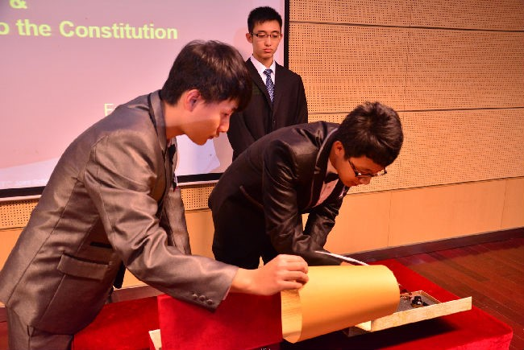
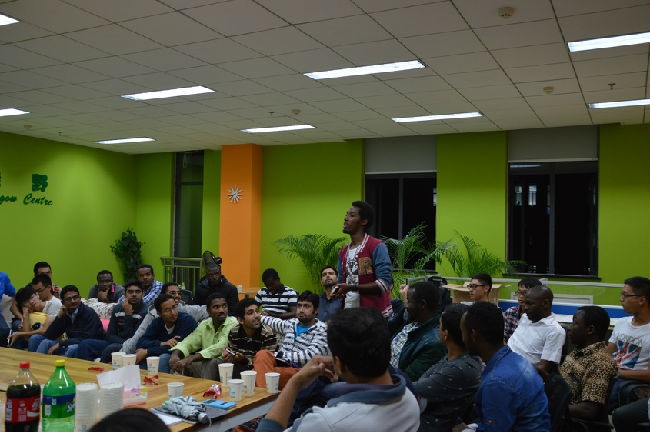
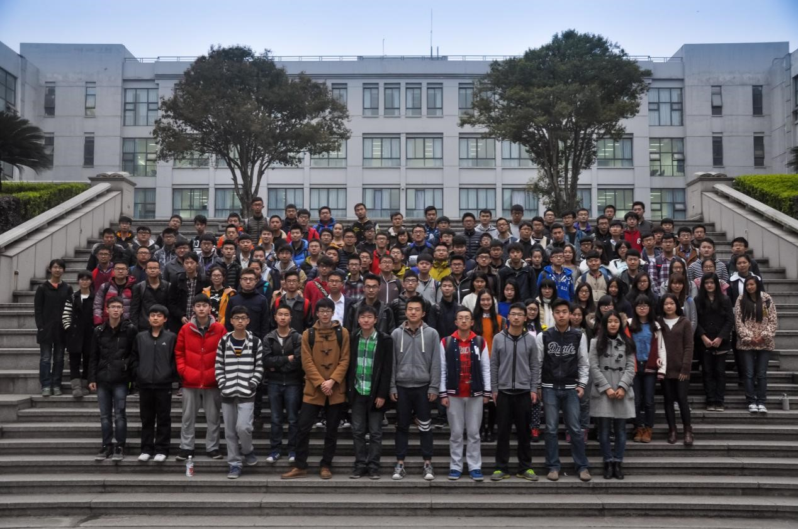

章程签订，方有格院
2013年11月，随着格拉斯哥学院分团委学生会第一届主席及学生议会联盟代表签订章程，格拉斯哥学院分团委学生会宣告成立。
部门设置：
1.组织部：
熟悉掌握全院团组织的基本情况，了解基层团组织的活动、组织生活、团总支委员情况；
严格做好团员的发展工作，团员证的注册和管理工作，做好团员登记、团费收缴、团员组织关系转接等工作；
负责业余团校、学生干部培训班的组织工作；
督促检查系部团总支、团支部组织生活开展情况；协助团委做好“五四”奖先工作和团总支平时考核作；
推荐优秀团员作为党员发展对象，并协助做好具体考查工作；
做好团组织、团员的档案建立和管理工作，做好组织工作的各种数据统计和材料收集工作；
完成学生会交办的其他任务。
2.文艺部：
文艺部同分团委运动队队长共同负责运动队事宜及各类体育赛事的联络、报名工作。
文艺部负责学生会的文体工作（如迎新大会、各类演出、运动会等）具体的实行与组织。
3.外联部：
外联部负责学生会的对外联系工作（如组织学院联谊、各类学术交流、邀请其他学院成员莅临指导等具体的实行与组织
外联部负责在对外联系活动中的后勤及秩序维持的工作，在处理对外联系工作时负主要责任。
4.新闻宣传中心：
新闻宣传中心负责学生会的新闻宣传工作（如撰写活动前期宣传、撰写新闻稿拍照摄影及后期加工、 召开活动报告会等）具体实行与组织新闻宣传中心负责在新闻宣传活动中的后期及秩序维持工作，在处理新闻宣传工作负主要责任。
5.礼仪部
为学院的重大活动提供礼仪服务。
6.学习部
共同负责辩论队事宜及辩论赛的联络、报名工作；
负责学生会的学习工作（如辩论赛、各类组织培训、成绩分析等）具体的实行与组织；
学习部负责在学习活动中的后勤及秩序维持的工作，在处理学习工作时负主要责任。
7.体育部：
体育部同分团委运动队队长共同负责运动队事宜及各类体育赛事的联络、报名工作；
体育部负责学生会的体育工作具体的实行与组织；
体育部负责在体育活动中的后勤及秩序维持的工作，在处理体育工作时负主要责任。
8.秘书处：
发挥学生会组织的桥梁纽带作用，做好学生会与学生的上情下达，下情上达的沟通作用；
协助主席工作，做好每次大型活动前的准备工作；
做好各项会议的通知、记录和考勤登记；
管理学生会各种文件、信函、报纸等，并对文件、信函登记、存档；
协助主席团调配人手、传达通知、撰写有关文件等；
你的惊讶，我的精彩
人们惊讶于格拉斯哥学院分团委学生会的成长速度，不到两年时间，学生会便在各方面取得了长足的进步。学院院刊《格悟志》和新闻节目《格视野》的推出让更多人了解格拉斯哥学院。班级篮球赛、足球赛的举办丰富了同学们的课余生活。Learn to learn系列讲座的开展也满足了同学们对各类学科的兴趣。我们坚持“All man are created equal.”的原则，把格拉斯哥学院学生会建设成具有国际化视野、切实维护学生权益、丰富学生课余生活的新生学生会。
你我欢腾，相约格院
格拉斯哥学院分团委学生会不仅面向学院内部，也面向全校开展了丰富多彩的活动。学院学生会与国际处合作，举办“绿野”双语角系列活动，促进中外学生交流，增强我校学生及留学生的语言水平。格拉斯哥学院和物理电子学院联合举办的万圣节游园会增加了同学们对万圣节的了解，使留学生更好的融入电子科技大学的大家庭。另外，“外语文化节”也正在积极筹备当中。“绿行”暑期支教队也将与您相约暑假。作为国际化学院，我们成功举办了IET英语演讲比赛成都赛区及西南赛区，其中蒲笑非同学在IET演讲比赛中获得全国总冠军。带领全院同学积极参加各类竞赛，其中获得IET跳跳球大赛全国二等奖，“爱•创•造”电子工程设计创客挑战赛最佳创意项目奖。为了促进中外学生交流，我院与国际合作与交流处共同主办格拉斯哥学院双语角——Global Chatroom.建立国际游学队，组织前往英伦三岛、澳大利亚、新西兰以及新加坡等国家进行交流访问学习。其中2人获得新加坡国立大学教授推荐信，2人获得AIA企业推荐信。邀请格拉斯哥大学校长——Anton Muscatelli 教授做客我校成电讲坛带来题为‘国际化人才和公民培养’讲座。作为格拉斯哥大学的学生，我们积极参加荣誉校长的评选并讨论苏格兰独立问题对我院发展及学生的影响。举办格院智慧论坛，邀请宁波诺丁汉大学宁波诺丁汉大学的Dr.Julien Le Kernec、格拉斯哥大学EFL课程主任William 
携手并进，共铸辉煌
作为一个新兴学院，在借鉴兄弟学院工作经验的基础上积极进行改革创新，建立全院公选制度、议会制度、学生会章程评议制度等特色制度。其中，学生会助理议会制度尤为突出，旨在培养学生会新生力量，推进学生会民主建设进程。为了落实对同学们权益的维护，同时为同学们提供更及时周到的服务，成立wehelp学生自助服务中心、we exercise运动减压室。成立瓦特俱乐部，为我院学子提供综合科技创新平台，积极参加各种科创竞赛，并取得佳绩。创建微信公众平台WeGlasgow，成立新媒体小组，搭建格物志、格视野新媒体宣传平台，获得好评。为了增加团队凝聚力，学生工作业务能力，进行骨干培训，到仙女湖开展素质拓展活动。积极与党小组进行思想交流。为加强学生会骨干的思想引领工作，举办纪念八一建军节活动、雷锋日学雷锋活动、军营部队生活体验及植树活动。就习近平主席五四重要讲话，积极组织同学“走近科技园，共筑中国梦”活动。为了提高学生会同学艺术欣赏水平，进行宣传设计培训。
格拉斯哥学院分团委学生会正在努力建设成为一个有着全校影响力的学院学生会，通过举办各种活动，在丰富课余生活的同时增长知识。在格拉斯哥学院分团委学生会成长的道路上，希望与你携手，共同铸就明日的辉煌。
